컴퓨터활용능력-2급 (2002-06-09 기출문제)
1과목: 컴퓨터 일반
1. 컴퓨터 산업의 발전은 처리속도, 신뢰성 향상, 하드웨어 비용의 축소 등 여러 가지 면에서 지속적인 발전을 거듭해 왔다. 이 변화 과정을 세대별로 구분하여 나타냈을 때 제4세대 컴퓨터의 특징이 아닌 것은 어느 것인가?
- CPU를 구성하고 있는 회로 소자로 LSI를 사용하였다.
- 시분할 방식(TSS : Time Sharing System) 이 실용화되었다.
- 캐시 기억장치, 가상 기억장치, 연상 기억장치 등이 실용화되었다.
- 개인용 컴퓨터의 대중화가 실현되었다.
(정답률: 53%)

2. 전 세계 모든 문자를 표현 할 수 있는 16비트 완성형 코드는?
- BCD코드
- ASCII 코드
- Hamming 코드
- Uni 코드
(정답률: 56%)
3. 한글 윈도우즈 98에서 [제어판]의 [프로그램 추가 / 제거] 기능에 대한 설명 중 틀린 것은?
- 응용 프로그램을 새로 설치하고 제거한다.
- 한글 Windows 98의 구성요소를 추가하거나 삭제한다.
- 시작프로그램을 변경할 수 있다
- 시동디스크를 작성할 수 있다.
(정답률: 56%)
4. 컴퓨터의 CPU와 주변기기 사이에 위치하여 데이터의 입출력. 제어를 CPU 대신 실행하는 장치는?
- 모뎀 (MODEM)
- 채널(Channel)
- 캐쉬(Cache)
- 버퍼(Buffer)
(정답률: 58%)
5. 한글 윈도우즈 98에서 디스크 검사에 대한 설명으로 바르지 못한 것은?
- 디스크에서 분산되어 있는 데이터를 순서대로 최적화시킨다.
- 하드디스크나 플로피디스크의 논리적 오류를 수정할 수 있다.
- 한글 윈도우즈 98이 비정상적으로 종료 시 자동으로 수행된다.
- [시작]-[프로그램]-[보조프로그램]-[시스템 도구]항목의 [디스크 검사]를 클릭한다.
(정답률: 40%)
6. 한글 윈도우즈 98에서 [폴더 옵션]의 [보기] 항목의 설명으로 바르지 못한 것은?
- 탐색기에서 [보기]-[폴더 옵션]에서 [보기] 탭을 선택한다.
- 즐겨찾기를 구성할 수 있다.
- 제목 표시줄에 전체경로를 표시할 수 있다.
- 현재의 폴더 옵션을 모든 폴더에 적용 시킬 수 있다.
(정답률: 47%)
7. 한글 윈도우즈 98은 다수의 프로그램을 동시에 실행시킬 수 있다. 이때 한 프로그램이 잘못 실행되어 도중에 강제 종료시킬 때 처음 사용하는 키는 어떤 것인가?
- [Ctrl]+[Alt]+[Delete]
- [Ctrl]+[Alt]+[Shift]
- [Ctrl]+[Alt]+[Space]
- [Ctrl]+[Alt]+[Esc]
(정답률: 77%)
8. 다음 중 [제어판]의 [내게 필요한 옵션]에서 설정할 수 있는 기능의 설명으로 잘못된 것은?
- 키보드 : 고정키, 필터키, 전환키 등을 사용하도록 설정할 수 있다.
- 사운드 : 사운드 탐지나 표시 기능을 설정할 수 있다.
- 마우스 : 두번 클릭 속도를 설정할 수 있다.
- 표시 : 고대비 화면을 설정할 수 있다.
(정답률: 55%)
9. 다음 중 한글 윈도우즈 98의 설명으로 틀린 것은?
- 휴지통의 최대 크기는 하드디스크 전체의 크기로 설정할 수 있다.
- 바탕화면에 자주 사용하는 폴더의 링크를 만들 수 있다.
- 새로운 프로그램의 등록과 제거는 제어판에서 할 수 있다.
- 모든 하드웨어를 플러그 앤 플레이 기능으로 쉽게 설치할 수 있다.
(정답률: 46%)
10. 다음 중 한글 윈도우즈 98의 인쇄 기능에 대한 설명으로 잘못된 것은?
- 기본프린터는 인쇄 명령시 특정 프린터를 지정하지 않은 경우 자동으로 인쇄 작업이 이루어지는 프린터이다.
- 기본 프린터는 사용자가 임의로 변경할 수 있다.
- 기본프린터는 한글 윈도우즈 98의 기초프린터로 삭제될 수 없다.
- 인쇄할 파일의 아이콘을 마우스로 드래그하여 프린터 아이콘에 이동시키면 인쇄된다.
(정답률: 63%)
11. 다음 중 한글 윈도우즈 98 작업도중 [Ctrl] +[Esc] 를 누르면 어떤 현상이 일어나는가?
- 시작 메뉴가 나타난다.
- 실행 창이 종료된다.
- 작업중인 항목의 바로 가기 메뉴가 나타난다.
- 창 조절 메뉴가 나타난다.
(정답률: 81%)
12. 다음 중 탐색기에서 파일과 폴더의 삭제 방법으로 잘못된 것은?
- 파일이나 폴더를 선택한 다음 [파일] 메뉴의 [삭제]를 누른다.
- 파일이나 폴더를 선택한 후 [Shift]키와 [Delete]키를 함께 누른다.
- 파일 선택 후 키보드의 [Delete]를 누른다.
- 파일과 폴더를 선택한 다음 [Ctrl]키와 [Delete]키를 누른다.
(정답률: 64%)
13. 다음 중 정보통신망의 종류의 설명으로 거리가 먼 것은?
- PBX(Private Branch Exchange) : 전화국의 교환기를 소형화한 것으로 개인이 많은 전화기를 사용할 때 사용하는 소형 교환 장치
- 라우터(router) : LAN을 연결해주는 장치로서 정보에 담긴 수신처 주소를 읽고 가장 적절한 통신통로를 이용하여 다른 통신망으로 전송하는 장치
- MAN(Metropolitan Area Network) : LAN의 기능을 포함하면서 WAN 보다 넓은 최대 범위가 500km 정도의 지역에서 고속으로 전송할 수 있는 통신망
- 리피터(repeater) : 디지털 방식의 통신선로에서 전송신호를 재생하여 전달하는 전자통신장치
(정답률: 60%)
14. 다음 중 윈도우즈 98의 보조 프로그램에 관한 설명으로 거리가 먼 것은?
- 계산기는 일반용과 공학용이 있다.
- 사용자정의 문자편집기를 사용해서 특별문자, 로고 등을 만들어 글꼴 라이브러리에서 사용할 수 있다.
- 그림판은 간단한 그림을 그릴 수 있으며 bmp 파일 등으로 저장할 수 있다.
- 메모장은 모든 종류의 파일을 크기와 관계없이 저장할 수 있다.
(정답률: 71%)
15. 인터넷 기술을 이용하여 기업 내부의 업무를 처리하려는 새로운 네트워크 환경으로, 인터넷과 동일한 TCP/IP 프로토콜을 사용한 LAN 기반 네트워크를 무엇이라고 하는가?
- 원거리통신망(WAN)
- 인트라넷(Intranet)
- 부가가치통신망(VAN)
- MAN(Metropolitan Area Network)
(정답률: 72%)
16. 다음은 데이터 통신의 어떠한 전송 방식을 설명한 것인가?
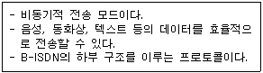
- ATM
- STM
- VAN
- LAN
(정답률: 50%)
17. 다음 중 인터넷에 대한 설명으로 가장 거리가 먼 것은?
- 여러 개의 네트워크들이 서로 유기적으로 결합되어 있는 하나의 거대한 네트워크
- TCP/IP 프로토콜을 사용하여 상호 접속하는 네트워크
- 전화망을 중심으로 데이터를 교환하는 전 세계 네트워크
- 미국의 국방성에서 시작되어 전 세계적으로 연결된 네트워크
(정답률: 49%)
18. 다음 중 전자우편에 관한 설명으로 거리가 먼 것은?
- 전자우편은 편지를 주고받을 수 있는 서비스로 편지를 받을 때는 POP 서버를, 편지를 보낼 때는 SMTP 서버를 이용한다.
- 전자 우편은 기본적으로 8bit 코드를 사용하여 한글을 사용하기에 적당하다.
- MIME은 Multipurpose Internet Mail Extensions의 약자로 텍스트, 이미지, 오디오, 비디오 등의 멀티미디어 전자우편을 주고받기 위한 인터넷 메일의 표준이다.
- 전자우편 주소 형식은 ID@호스트 주소이다.
(정답률: 59%)
19. 다음 중 비트맵 파일 형식이 아닌 것은?
- JPEG
- BMP
- GIF
- CDR
(정답률: 69%)
20. 다음 중 멀티미디어 관련 설명으로 잘못된 것은?
- 사운드 파일 포맷으로는 WAV, MID, PNG 등이 있다.
- 정지영상 파일 포맷으로는 JPEG, GIF, BMP 등이 있다.
- 동영상 파일 포맷으로는 MPEG, AVI, MOV 등이 있다.
- 멀티미디어 데이터란 텍스트, 사운드, 정지영상, 동영상 등을 말한다.
(정답률: 62%)
2과목: 스프레드시트 일반
21. 다음 그림에서 [C1] 셀에 나타나는 표시(131-037)는 어떠한 경우에 나타나는가?
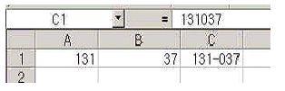
- [C1] 셀의 표시형식을 일반으로 설정하고 A1-B1을 입력한 경우
- [C1] 셀의 표시형식을 회계로 설정하고 =(A1-B1)을 입력한 경우
- [C1] 셀의 표시형식을 일반으로 설정하고 =131-037을 입력한 경우
- [C1] 셀의 표시형식을 우편번호로 설정하고 131037을 입력한 경우
(정답률: 69%)
22. 다음 중 메뉴의 [삽입] - [그림]에 대한 설명으로 맞지 않은 것은?
- 도형 그리기를 통해서도 그림을 그려 넣을 수 있다.
- 기본적으로 제공되는 클립아트들을 이용할 수 있다.
- 컴퓨터에 장착된 카메라나 스캐너로부터 직접 그림을 삽입할 수 없다.
- 다양한 글씨 그림인 WordArt를 사용할 수 있다.
(정답률: 76%)
23. 다음 중 워크시트 데이터 편집과 관련된 내용의 설명으로 틀린 것은?
- 워크시트의 맨 마지막 열인 IV 열에 데이터가 있을지라도 새로운 열을 삽입할 수 있다.
- 워크시트 중간에 새로운 행을 삽입하더라도 전체 행의 개수에는 변화가 없다.
- 셀/행/열의 삽입 단축키는 [Ctrl] +[Shift] +[+] 키 이다.
- 셀 삽입은 워크시트의 중간에 한 개 이상의 셀을 삽입하는 기능이다.
(정답률: 43%)
24. 다음 중 워크시트의 추가와 삭제에 관한 설명으로 옳지 않은 것은?
- 삭제하려는 워크시트가 여러 개인 경우, 한번에 여러 워크시트를 삭제하는 것이 가능하다.
- 워크시트 추가 명령을 실행하면 새롭게 추가된 워크시트는 현재 화면에 보이는 워크시트의 왼쪽에 생성되어 추가된다.
- 워크시트를 새롭게 추가하여도 기존에 존재하고 있는 워크시트는 삭제되지 않는다.
- 워크시트를 삭제해도 '실행취소(Undo)' 기능으로 삭제한 워크시트를 되살릴 수 있다.
(정답률: 59%)
25. 다음 중 디폴트에 의한 데이터 입력 시 잘못된 것은?
- 수치데이터는 셀의 오른쪽에 정렬되며 공백과 특수문자를 사용할 수 있다.
- 문자열 데이터는 셀의 왼쪽에 정렬된다.
- 수식데이터는 워크시트상에 수식 결과값이 표시된다.
- 특수문자입력은 한글자음(ㄱ, ㄴ, ㄷ 등)을 입력한 후 "한자"를 누른 다음 나타나는 목록상자에서 원하는 문자를 선택한다.
(정답률: 70%)
26. 다음 중 매크로에 대한 설명으로 잘못된 것은?
- 매크로를 작성할 때 지정한 단축키를 이용하면 매크로를 실행할 수 있다.
- 단축키를 이용할 때는 반드시 기본적으로 [Alt]키를 사용하여야 한다.
- 동작이 끝나기 전에 매크로를 중지시키려면 [Esc]키를 누른다.
- 매크로에서 할당되는 도구 버튼을 만들어 실행할 수 있다.
(정답률: 75%)
27. 아래 그림과 같은 객관식 시험 답안의 о/Χ 채점 결과에 대하여 о 한 개당 20점으로 시험 점수를 계산하고 싶을 때 [G2]셀에 들어갈 올바른 수식은?
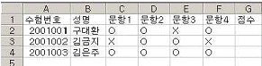
- =COUNT(C2:F2,"о")*20
- =COUNTIF(C2:F2,"о")*20
- =SUM(C2:F2,"о")*20
- =SUMIF(C2:F2,"о")*20
(정답률: 74%)
28. 다음 함수식의 설명 중 맞는 것은?
- LARGE - 인수 중에서 가장 큰 값을 구한다.
- SMALL - 인수 중에서 가장 작은 값을 구한다.
- COUNTA - 값이 있거나 비어있지 않은 셀의 개수를 구한다.
- COUNTIF - 인수 중에서 숫자 데이터의 개수를 구한다.
(정답률: 69%)
29. 다음 중 연산자에 대한 설명으로 틀린 것은?
- 산술 연산자는 숫자에 대한 수학적 연산을 실행하고 결과값을 산출한다.
- 비교 연산자는 두 개의 값을 비교하여 참 또는 거짓을 산출한다.
- & 기호는 두 값을 연결하여 하나의 수치 값을 산출한다.
- 참조 연산자는 셀 참조 범위를 설정하기 위해 사용하는 것으로 함수 안에서 사용한다.
(정답률: 56%)
30. 다음 워크시트에서 B8 셀에 '=VLOOKUP("판매부",A1:C7,2)'를 입력했을 때 그 결과로 B8 셀에는 어떤 값이 표시되겠는가?
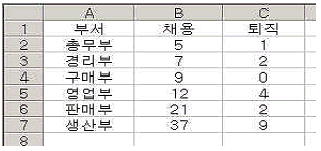
- 21
- 2
- 1
- 9
(정답률: 65%)
31. 다음은 차트를 작성할 때 사용할 수 있는 기능이다. 3차원 막대그래프에 적용할 수 없는 기능은?
- 상하 회전
- 원근감 조절
- 데이터 테이블 표시
- 추세선
(정답률: 63%)
32. 차트마법사의 4단계 중 차트의 제목을 입력할 수 있는 단계는?
- 1단계
- 2단계
- 3단계
- 4단계
(정답률: 62%)
33. 사용자 정의 도구 명령을 도구모음 줄에 추가하고자 한다. 다음 중 잘못된 작업과정은?
- [보기]메뉴의 [도구모음]-[사용자 정의]
- [도구]메뉴의 [사용자 정의]
- 도구모음 줄에서 단축메뉴 표시-[사용자 정의]
- [보기]-[사용자 정의 보기]
(정답률: 51%)
34. 다음 중 필터 기능에 대한 설명으로 틀린 것은?
- 필터기능은 많은 양의 자료에서 설정된 조건에 맞는 자료만을 추출하여 나타내기 위한 기능이다.
- 자동필터 기능은 조건에 맞는 자료를 다른 곳으로 추출할 수 있다.
- 자동필터 기능은 두 개의 열에 조건이 설정된 경우 AND 조건으로 결합된다.
- 고급필터를 사용할 때는 먼저 조건을 시트에 입력해 두어야 한다.
(정답률: 52%)
35. [차트1]을 완성한 후 [차트2]와 같이 변경하려고 한다. 이 때 사용되지 않은 기능은?
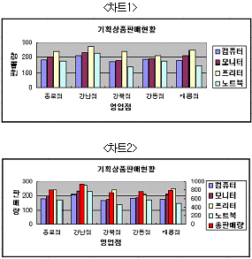
- 축 제목 서식의 방향을 변경하였다.
- [이중 축 혼합형]과 [묶은 세로 막대형]을 사용하였다.
- [차트]-[데이터 추가]를 선택하여 총 판매량 데이터를 추가하였다.
- 총 판매량은 데이터 계열을 더블 클릭 한 후 영역 없음으로 지정하였다.
(정답률: 66%)
36. 다음 중 매크로 기록 대화상자에서 매크로 저장 위치와 관계없는 것은?
- 새 통합 문서
- 차트
- 현재 통합 문서
- 개인용 매크로 통합 문서
(정답률: 69%)
37. 고급필터에서 다음과 같은 조건을 설정하면 어떤 결과가 나타나는가?
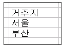
- 거주지가 서울이거나 부산인 경우가 추출 된다.
- 거주지가 서울이면서 부산인 경우가 추출 된다.
- 거주지가 서울인 경우만 추출 된다.
- 거주지가 부산인 경우만 추출 된다.
(정답률: 67%)
38. 다음 그림은 '목표값 찾기'를 실행한 그림이다. 이에 대한 설명 중 틀린 것은?
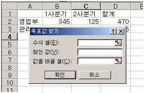
- '값을 바꿀 셀'의 주소를 직접 키보드로 입력할 수 있다.
- '수식 셀'로 지정된 셀에는 반드시 수식의 형식을 갖추어야 한다.
- '찾는 값'에 원하는 목표값을 직접 키보드로 입력하거나 마우스로 셀을 선택한다.
- '값을 바꿀 셀'은 '수식 셀'의 수식에 포함되어 있어야 한다.
(정답률: 46%)
39. 매크로 작업시 사용되는 [양식] 도구상자와 [컨트롤 도구 상자]에는 이름이 같은 상자들이 존재한다. 다음 그림 중 어느 한쪽에만 존재하는 도구는 어느 것인가?
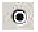
(옵션단추)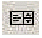
(목록상자)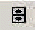
(스크롤 막대)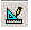
(디자인 모드)
(정답률: 51%)
40. 다음 중 인쇄 작업시 설정할 수 있는 항목에 대한 설명으로 잘못된 것은?
- 인쇄를 시작하기 전 미리보기를 하여 여백을 설정할 수 있다.
- 셀 구분선은 인쇄시 항상 출력된다.
- 워크시트는 축소 출력기능이 있다.
- 인쇄시 행/열 머리글을 지정할 수 있다.
(정답률: 70%)
시분할 방식(TSS : Time Sharing System)은 여러 사용자가 하나의 컴퓨터를 동시에 사용할 수 있도록 하는 기술로, 제3세대 컴퓨터에서 이미 개발되어 사용되었습니다. 이 기술은 여러 사용자가 동시에 컴퓨터를 사용할 수 있어 작업 효율성을 높이고, 컴퓨터 자원의 효율적인 사용을 가능하게 합니다. 따라서 제4세대 컴퓨터의 특징으로는 포함되지 않습니다.